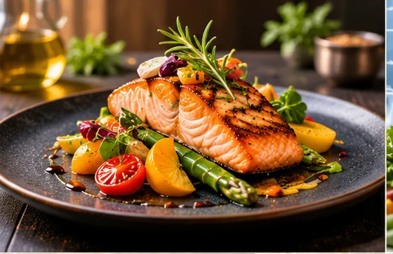
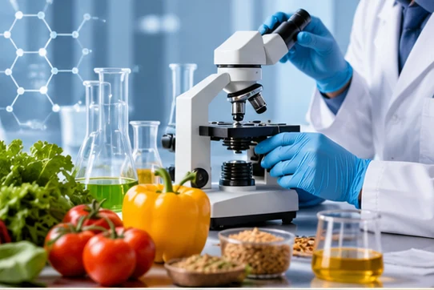
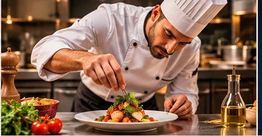
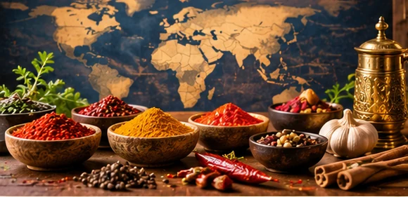
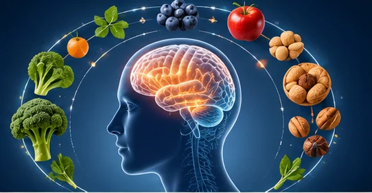
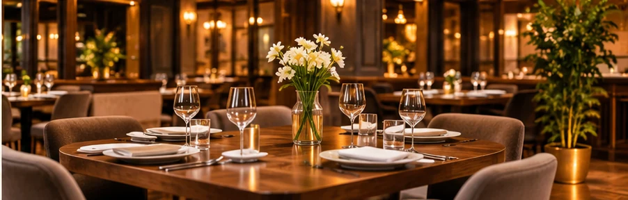

01
INTERNATIONAL CUISINE
آشپزی ملل
دانش و هنر تهیه غذاهای فرهنگهای مختلف جهان؛ با تمرکز بر شناخت مواد اولیه، انتقال حرارت، طعم، عطر، بافت و ارائه حرفهای.
مسیر یادگیریمواد اولیه ← تکنیک ← طعم و بافت ← اجرا ← توسعه غذا
ضربان، بستری برای شناخت عمیقتر غذا و ارتباط آن با انسان، ذهن، احساسات، فرهنگ و صنعت غذاست.
ما بر این باوریم که غذا تنها ترکیبی از مواد اولیه نیست؛ بلکه حاصل تعامل علم، هنر، تجربه، فرهنگ و نیازهای انسانی است.
ضربان با رویکردی میانرشتهای تلاش میکند دانش آشپزی، علوم غذایی، روانشناسی، جامعهشناسی و مدیریت را در کنار یکدیگر قرار دهد تا درک دقیقتری از غذا و نقش آن در زندگی ایجاد کند.
از آشپزخانه حرفهای تا آزمایشگاه پژوهش؛ نگاهی تصویری به جهان گسترده غذا.






از منطق پخت و طعمشناسی تا نقش غذا در ذهن، فرهنگ و زیست انسان؛ هر حوزه دریچهای تازه برای شناخت است.
از شناخت مواد اولیه تا تکنیکهای پخت، منطق طعمسازی و خلق تجربه غذایی.
کاوش این حوزه ←ارتباط غذا با ادراک، حافظه، احساسات و رفتار انسان.
کاوش این حوزه ←غذا در بستر فرهنگ، هویت، خانواده و روابط اجتماعی.
کاوش این حوزه ←تفاوتهای فردی، ژن و محیط و پاسخهای زیستی مرتبط با غذا.
کاوش این حوزه ←هر مسیر با شناخت مبانی آغاز میشود و با تحلیل، تمرین و کاربرد عملی ادامه پیدا میکند.
دانش و هنر تهیه غذاهای فرهنگهای مختلف جهان؛ با تمرکز بر شناخت مواد اولیه، انتقال حرارت، طعم، عطر، بافت و ارائه حرفهای.
بررسی نقش حواس پنجگانه، حافظه، یادگیری، احساسات و محیط در انتخاب غذا و تجربه خوردن.
شناخت غذا بهعنوان بخشی از ساختار زندگی اجتماعی؛ از هویت فرهنگی و آیینها تا اقتصاد، مهاجرت و پایداری.
بررسی مبانی ژنتیک، تفاوتهای فردی در ادراک مزهها، متابولیسم و ظرفیتها و محدودیتهای تغذیه شخصیسازیشده.
مطالب این بخش آموزشی و پژوهشیاند و جایگزین تشخیص پزشکی یا توصیه تخصصی فردی نیستند.بخش مقالات و پژوهشها فضایی برای بررسی پژوهشهای علمی، تحلیل موضوعات میانرشتهای و تفکیک شواهد از فرضیهها و دیدگاههای شخصی است.
پیشنهاد موضوع پژوهشی ↗ضربان در کنار تولید دانش، مسیرهایی برای آموزش، توسعه حرفهای و بهبود کسبوکارهای غذایی طراحی میکند.
استانداردسازی فرایندها، طراحی و مهندسی منو، کنترل هزینه، کاهش ضایعات و بهبود تجربه مشتری.
گفتوگو درباره نیاز کسبوکار ←مسیرهای یادگیری ساختاریافته در آشپزی حرفهای، علوم غذا و مدیریت؛ دورهها پس از آمادهشدن محتوای واقعی فعال میشوند.
اطلاعات ثبتنام بهزودی منتشر میشودمعرفی کتابها و منابع مطالعاتی تخصصی برای تبدیل مطالعه پراکنده به یادگیری هدفمند.
فهرست منابع در دست آمادهسازی استابزارها، فایلها، جزوهها و محصولات آموزشی کاربردی برای آشپزها، مدیران و علاقهمندان غذا.
فروش آنلاین هنوز فعال نیستضربان از همکاری میان متخصصان، پژوهشگران، آشپزها، مدیران و کسبوکارها برای توسعه پروژههای علمی، آموزشی و تجاری استقبال میکند.
شروع یک همکاری ↗برای طرح پرسش، پیشنهاد همکاری، درخواست خدمات تخصصی یا مشارکت در پروژههای ضربان با ما در تماس باشید.